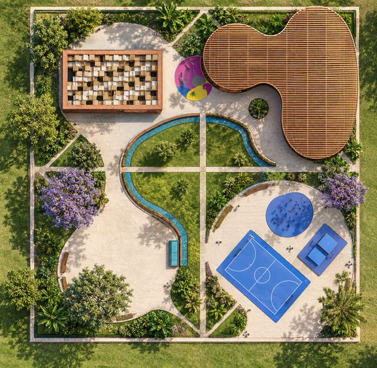
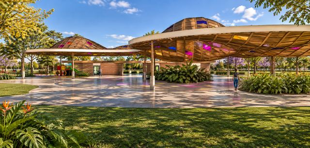
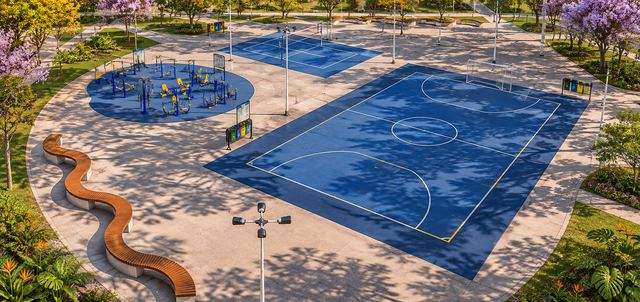
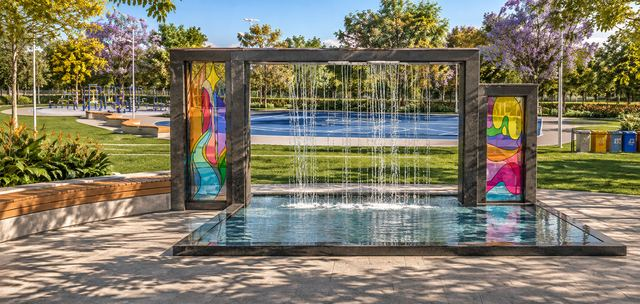
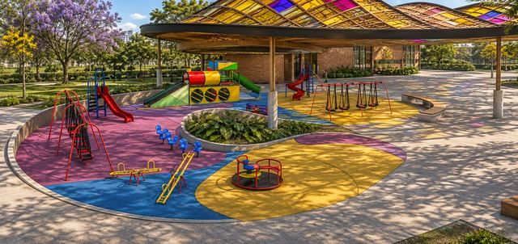
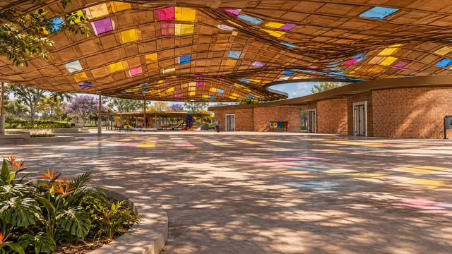
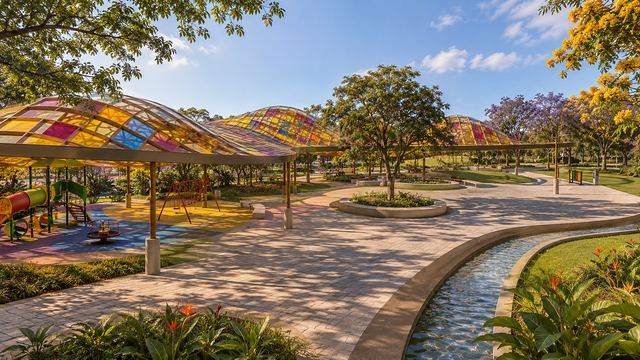
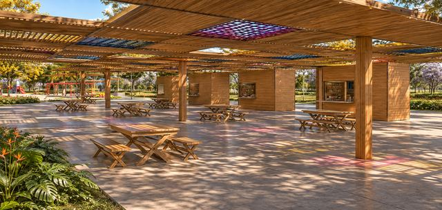

Como vai ficar
















Imagens ilustrativas da proposta.
O projeto propõe revitalizar a Praça Américo Ferreira de Abreu, no bairro Santa Mônica, em Uberlândia, tornando-a um espaço de encontro, lazer e convivência para todas as idades. A proposta inclui pavilhões de madeira com cobertura de vidros coloridos, playground, quadra esportiva, academia ao ar livre, jardins, canal de água e uma área de convivência com mesas e quiosques. O projeto é desenvolvido por pana projetos, em conjunto com a instituição ESAMC.
Clique em um quadro para ver todas as fotos.








Imagens ilustrativas da proposta.
Fotos atuais da praça.
Visita ao local para registrar as condições atuais da praça, o que funciona bem e o que precisa de cuidado.
Desenvolvimento da proposta, com imagens ilustrativas dos pavilhões, do playground, da quadra, da fonte e dos jardins.
Execução da proposta na praça, com a construção das estruturas e o plantio dos jardins.
Estudo, planejamento e desenvolvimento de propostas para a revitalização, modernização e valorização dos espaços públicos da praça, visando à melhoria da infraestrutura, da acessibilidade, da organização e da qualidade de vida da comunidade.
Apoio institucional e incentivo acadêmico por parte da ESAMC, visando fortalecer e dar credibilidade à proposta de revitalização da praça, por meio do envolvimento da instituição, do incentivo à participação dos alunos e da valorização de iniciativas acadêmicas e sociais que contribuam positivamente para a comunidade e para o desenvolvimento urbano.